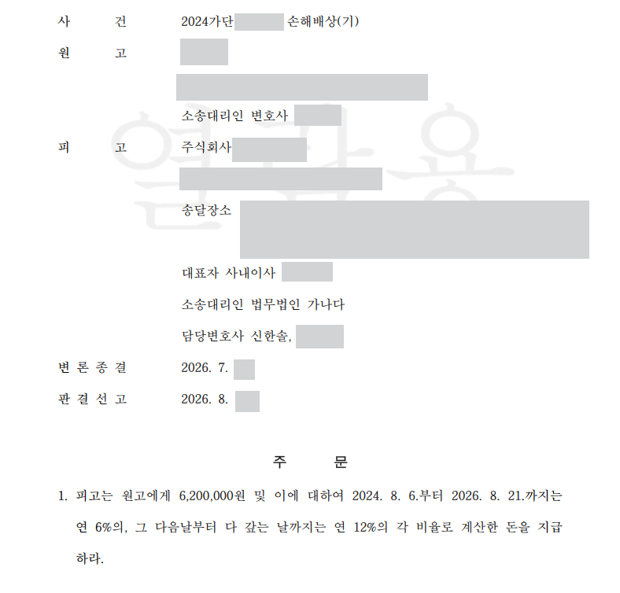

원고는 피고 소유 건물에서 실내 중고자동차 매장을 운영했습니다. 건물 누수로 전시 차량에 석회물과 습기 등이 생기자, 차량가치 하락 119,421,000원, 세척·복원비 8,680,000원, 영업손실 13,269,000원 등 총 141,370,000원의 손해배상을 청구했습니다.
누수 자체는 실제로 있었고 관련 사진과 영상도 제출되어 있었습니다. 따라서 피고에게 손해배상책임이 인정될 가능성은 충분했지만, 누수 책임과 1억 4천만 원의 손해액은 별개의 문제였습니다.
원고는 예상 판매가격과 실제 판매가격의 차이를 차량가치 하락으로 계산했습니다. 피고 측은 중고차 가격에 연식·주행거리·사고이력·시장시세 등 다른 요소가 함께 작용한다는 점을 들어, 예상 판매가격의 객관성과 누수와의 인과관계를 다퉜습니다.
세척비와 차량가치 하락을 함께 청구한 부분은 손해의 중복 여부를, 영업손실은 실제 영업중단 기간과 구체적인 손실액이 입증되었는지를 문제 삼았습니다.
재판부가 누수 책임이 인정될 경우 피고 측에서 어느 정도의 손해까지 인정할 수 있는지를 묻자, 신한솔 변호사는 의뢰인과 상의해 세차비 정도는 부담할 수 있다는 입장을 정리했습니다.
이에 석회물 피해 주장 차량 24대는 대당 10만 원, 습기·성에 피해 주장 차량 38대는 대당 4만 원으로 계산해 합계 392만 원이 적정하다는 의견을 참고서면으로 제출했습니다.
대구지방법원은 피고의 누수 손해배상책임은 인정했지만, 차량가치 하락과 영업손실은 증거 부족을 이유로 받아들이지 않았습니다.
차량 62대의 세차비는 대당 10만 원씩 620만 원으로 인정했습니다. 결국 1억 4,137만 원의 청구 중 620만 원만 인용되고 나머지는 기각되었습니다.
개인정보와 사건번호 일부를 비식별 처리한 판결문 일부입니다.

손해배상청구를 받은 뒤 상대방이 주장하는 손해액을 어디까지 다투어야 할지,
각 손해항목의 입증과 인과관계를 어떻게 정리해야 할지 고민하고 계십니까.
변호사 논평
실제 누수가 있었더라도 상대방이 주장한 손해액까지 그대로 인정되는 것은 아닙니다. 피고 대리인은 손해항목별로 무엇이 실제로 입증되었는지 나누어 보고, 입증되지 않은 부분까지 의뢰인이 부담하지 않도록 다툴 필요가 있습니다.